3.6 Flash 发布于 2026-07
Google DeepMind · Gemini · 2026-07 · 主干正代
Gemini 3.6 Flash
通用 agentic 与多模态任务的 Flash 正代升级。

速度—质量平衡更新
面向 coding / agent loops
编辑判断
发布时间必须位于 3.5 之后、3.7 之前；不能按目录名或模型数字想当然排序。
证据边界
官方博客和 API 文档可验证定位，完整训练细节未公开。
通用 agentic 与多模态任务的 Flash 正代升级。

3.6 Flash 发布于 2026-07
速度—质量平衡更新
面向 coding / agent loops
发布时间必须位于 3.5 之后、3.7 之前；不能按目录名或模型数字想当然排序。
官方博客和 API 文档可验证定位，完整训练细节未公开。